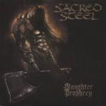

|
|
||
Sacred Steel : Slaughter Prophecy (2002) |
|

http://www.sacredsteel.de |
1. The Immortal Curse 0:14 |
7.8/10 |
|
Slaughter Prophecy es el cuarto disco de la banda alemana Sacred Steel. Sacred Steel hacen heavy metal clásico pero influido por los géneros más oscuros, por lo que tienen ciertos aires de thrash e incluso de black metal. Esta es una de esas bandas que a la mitad de la gente le encantan y que la otra mitad los odian. Gran parte de la culpa de esto la tiene su cantante, Gerrit P. Mutz. La voz de Mutz es adecuada al estilo que practican, de tono alto y un poquito extrema, pero lo que marca la diferencia es la entonación. Mutz aporta muchísima tensión a las canciones enfatizando siempre la sílaba que menos te esperas. De esta forma consigue un estilo muy particular y agresivo, pero que es difícil de apreciar, sobre todo la primera vez que le escuchas. Y en cuanto a este disco, Sacred Steel continúa en la misma línea que en su anterior, Bloodlust, con once temas cargados de fuerza y velocidad, quizás incluso un poco más extremos que en el disco anterior. De la presentación voy a destacar la negrura que envuelve al disco, desde la siniestra portada hasta las fotos de la banda, en blanco y negro, y en la que estos chicos ponen unas caras de locos que asustan... ;-) Tras "The Immortal Curse", la corta introducción hablada, "Slaughter Prophecy" nos mete de lleno en un universo de magia, tinieblas, terror y violencia, en un estilo cercano al black metal y con los agudos de Gerrit Mutz sobresaliendo aquí y allá. En "Sacred Bloody Steel" recuperamos el estilo clásico de la banda, con la peculiar voz de Mutz sobre el doble bombo y los riffs simples, oscuros y contundentes. La cuarta canción, "The Rites of Sacrifice" es otro tema rápido, de ritmo marcado y un estribillo agresivo y contundente. "Raise the Metal Fist" es uno de esos temas que abanderan el heavy metal. Musicalmente es de ritmo moderado, para ser de Sacred Steel, con cambios, coros potentes y estribillo simple y pegadizo. El sexto corte, "Pagan Heart", es de los de ritmo endiablado y está plagado de terribles voces susurrantes que se enfrentan a la voz principal. "Faces of the Antichrist" es mi tema favorito del disco. Vertiginoso doble bombo, llevando a la misma velocidad a las guitarras, estribillo pegadizo y potente, cambios de ritmo y el mejor, aunque algo corto, solo de guitarra del álbum. "Lay me to my Grave" posee un ritmo muy marcado que, a pesar del doble bombo, no resulta excesivamente rápido, y que convierte a esta canción en una de las menos potentes. A pesar de aparecer como bonus, "Crush the Holy, Save the Damned" es un temazo, veloz, con cambios de ritmo y un estribillo cargado de fuerza. "Let de Witches Burn" tiene fuertes reminiscencias de trash metal clásico, sobre todo por los oscuros riffs de guitarra. El último corte, "Invocation of the Nameless Ones", es un tema largo, variado, con sonidos que van desde el trash hasta el power metal, y una historia épica sobre un terror largo tiempo olvidado que retorna para triunfar. |
||
Rubén Béjar |
||